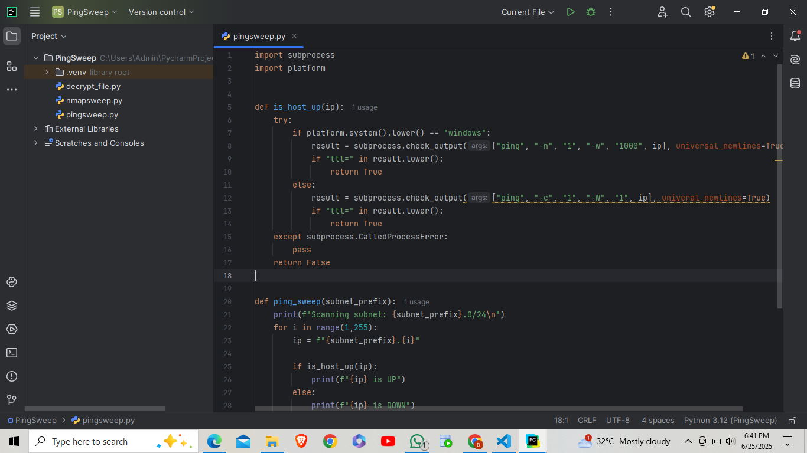
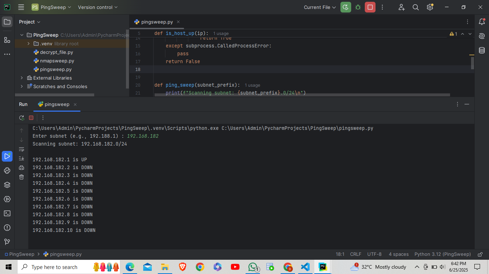
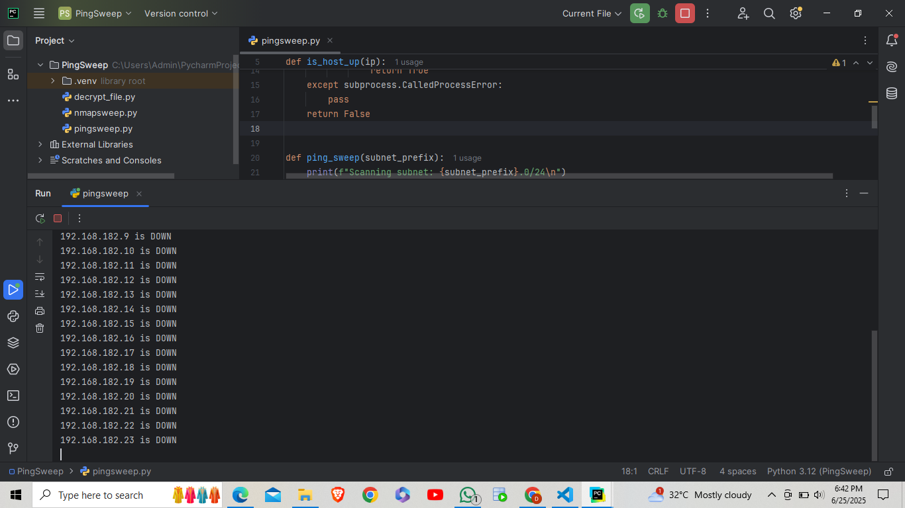

A passionate and detail-oriented Cybersecurity student with hands-on experience in web development,
cybersecurity projects, and networking tools. Proficient in tools wireshark, metasploit, setoolkit, nmap, and
theHarvester with strong foundation in programming languages C, Python, Java, PHP and SQL. Eager to
leverage technical expertise and problem-solving skills in a challenging cybersecurity role to strengthen
digital defenses.
Skills
Front-End
HTML
CSS
JavaScript
Programming Languages
C
Java
Python
PHP
Cyber Security Tools
Nmap
Metasploit
SEToolkit
Wireshark
Projects
CYBER SECURITY - Network Host Discovery using Ping Sweep



Tech Stack: Python, ICMP, Subprocess Module.
Description: Developed a Python script (pingsweep.py) that scans a given IP range to identify active hosts by sending ICMP echo requests. Used subprocess module to perform low-level network diagnostics efficiently. Helpful in network mapping and security auditing tasks.
Key Features:
Takes IP range input and scans for live devices.
Displays responsive hosts.
Useful for initial reconnaissance in cybersecurity.
CYBER SECURITY - Phylax : Real-Time Server Security Tool
Description: Built a secure, encrypted keystroke logging tool for terminal use, leveraging pynput for input capture and cryptography for log encryption. Included decryption viewer and real-time log saving with timestamping. Designed with ethical boundaries and security best practices in mind for educational demonstrations.
Key Features:
Encryption: Keystrokes are securely encrypted using symmetric encryption before being saved.
Timestamping: Every keystroke is logged with an accurate timestamp.
Local File Storage: Encrypted logs are stored in a logs/ directory for later review.
Fully CLI-Based: No GUI; lightweight and minimal for command-line enthusiasts.
Ethical Use Warning: Designed strictly for educational/demonstration purposes.